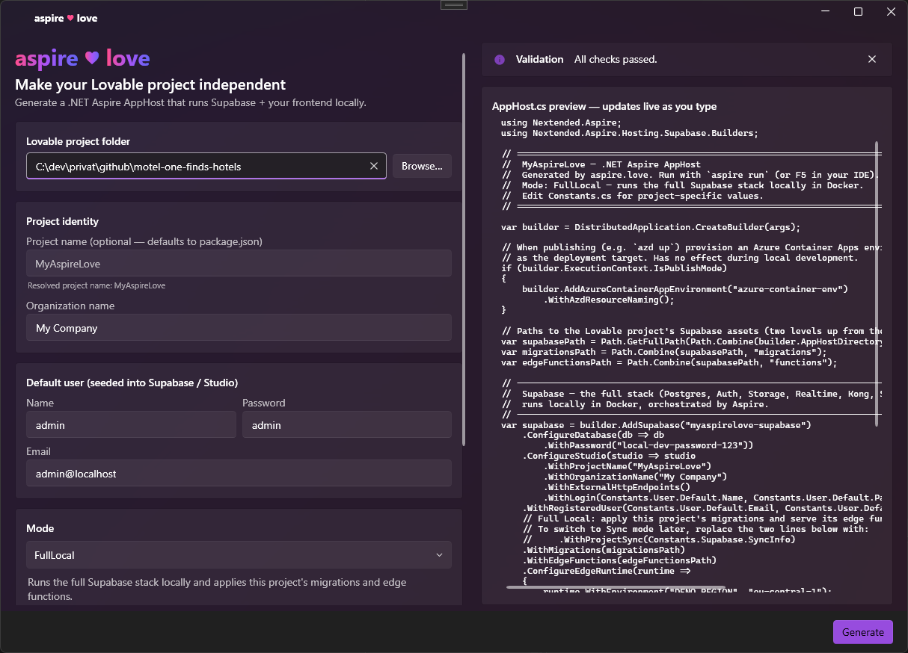
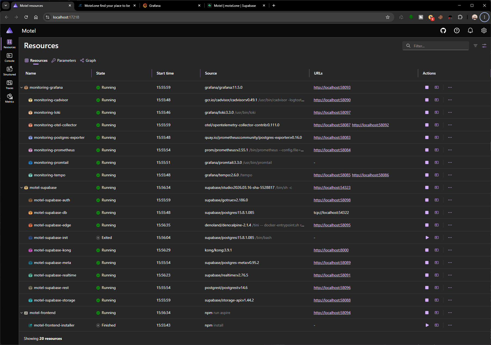

Your full Lovable stack — local & hosted anywhere.
aspire.love turns your Lovable app into a self-contained .NET Aspire solution. Run the whole stack — Supabase, edge functions and the Vite frontend — locally with one command, then deploy that very same solution to Azure Container Apps, App Service or any Kubernetes cluster. Fully independent of Supabase and Lovable.
# install the tool once
$ dotnet tool install -g love.aspire
# point it at your Lovable project
$ aspire-love init --path ./my-lovable-app
# then just run it
$ aspire runThe lock-in problem
Lovable projects depend on hosted Supabase and a build pipeline you don't control. aspire.love hands that control back to you.
Run anywhere
The full Supabase stack spins up locally in Docker, orchestrated by .NET Aspire.
Keep your data
Your migrations and edge functions are applied from your own repo — versioned, reproducible.
Deploy your way
A publish profile for Azure Container Apps is generated, so azd up just works.
How it works
Three steps from cloud-bound to fully local.
Point it at your project
Run the CLI or open the desktop app and select your Lovable project folder. The project name is read from package.json.
Pick a mode & options
Choose Full Local, Supabase Sync or Remote Connect, set your default user, and optionally enable observability.
Generate & run
An aspire folder with a Solution and AppHost is generated. Hit aspire run and everything comes up together.
Three modes, one tool
Start fully local, switch later — the generated code is commented to make switching trivial.
Full Local
Runs the entire Supabase stack in Docker and applies your migrations and edge functions. Perfect for offline development.
Supabase Sync
Runs Supabase locally but pulls schema and data from an existing cloud project. Stay in sync while you build.
Remote Connect
No local stack — the frontend talks directly to your existing Supabase cloud project. Lightweight and fast.
Built for real projects
CLI & desktop app
A dotnet tool for the terminal and a modern Fluent desktop app — both share the exact same generation core.
Readable, commented output
Generated C# is structured and documented, so you can understand it, tweak it, and switch modes by hand.
Observability included
Optionally wire in Grafana, Tempo and an OpenTelemetry collector for local traces and dashboards.
Lovable AI keeps working
Bring your LOVABLE_API_KEY and the edge runtime keeps your project's built-in AI features alive locally.
Seeded default user
A default admin user is registered in Supabase and Studio so you can log in immediately.
Azure-ready
A Container Apps publish target is provisioned automatically, so deploying with azd up needs no extra wiring.
Or skip the CLI — use the desktop app
aspire.love Studio is a modern Fluent app built on the exact same generation core. Every option is right there, with live validation and a code preview that updates as you type.

Live AppHost preview
The generated AppHost.cs re-renders on every change, so you see exactly what you'll get before writing a single file.
Guided & validated
Pick a folder, choose a mode and fill in only the fields that mode needs. Inline validation catches problems early.
Launch & publish
Once the aspire project exists, run it locally with one click or publish to Azure with azd — straight from the app.
The result: your whole stack, running locally
One aspire run brings everything up together. The .NET Aspire dashboard
shows every resource — Supabase, your edge functions and the frontend — with live logs and traces.

Everything in one view
Postgres, the Supabase services, your edge functions and the Vite frontend all start together and show up side by side with their endpoints.
Logs & traces built in
Click any resource for live logs. With observability enabled, traces flow to Grafana and Tempo so you can follow a request end to end.
Open it and build
Follow the frontend link, sign in with the seeded default user and develop fully offline — no cloud project required.
Local today, hosted anywhere tomorrow
What you generate is a standard .NET Aspire solution — not a black box. Ship the exact same code from your laptop to the cloud of your choice. No Supabase project and no Lovable pipeline required.
Azure Container Apps
A Container Apps publish target is generated for you. azd up provisions the infrastructure and deploys the whole stack — zero extra wiring.
Kubernetes & App Service
Because it's plain Aspire, you can generate Kubernetes manifests (e.g. with Aspir8) for any cluster, or host the containers on Azure App Service.
Docker, anywhere
Every service is a container. Run it on your own Docker hosts, a VPS or any platform that runs containers — you stay in full control.
Completely independent
No vendor account, no hosted Supabase, no Lovable build pipeline locked to someone else's cloud. You own the database, the edge functions, the frontend and the deployment — from localhost to a production cluster.
Get started in seconds
Install the tool and free your project today.
$ dotnet tool install -g love.aspire
$ aspire-love init --path ./my-lovable-appNo CLI needed — aspire.love Studio walks you through every option with live validation and a live code preview.